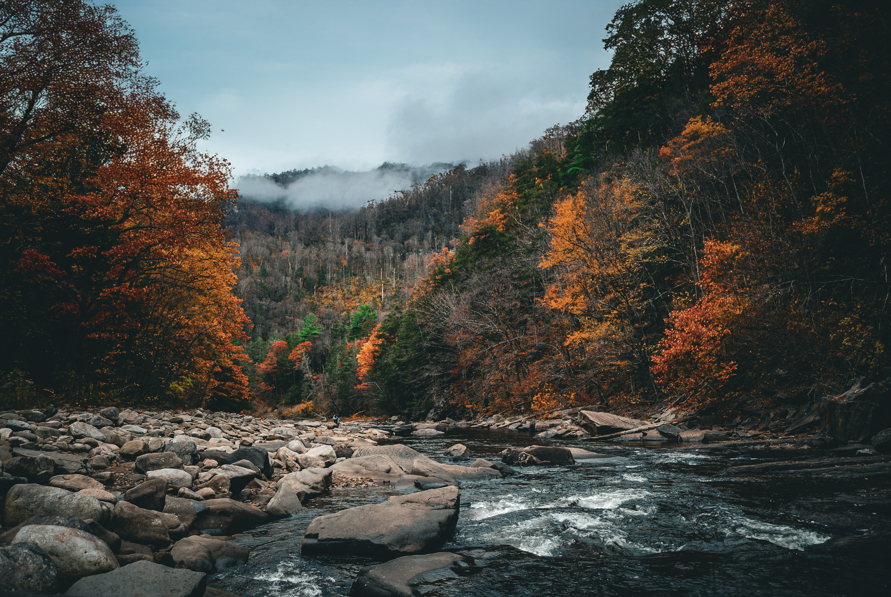
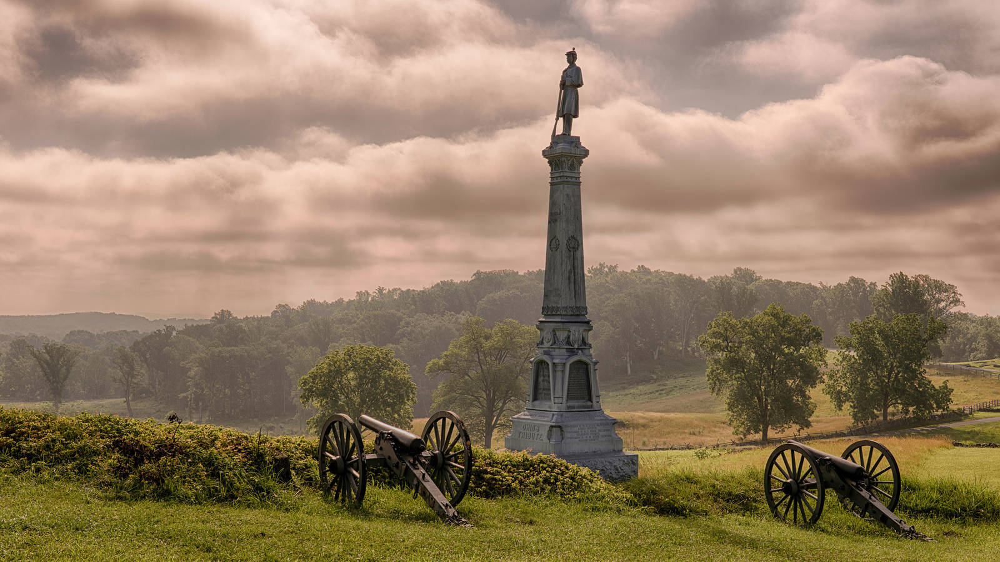
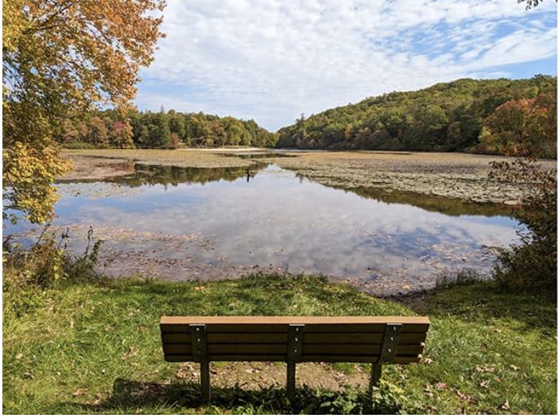
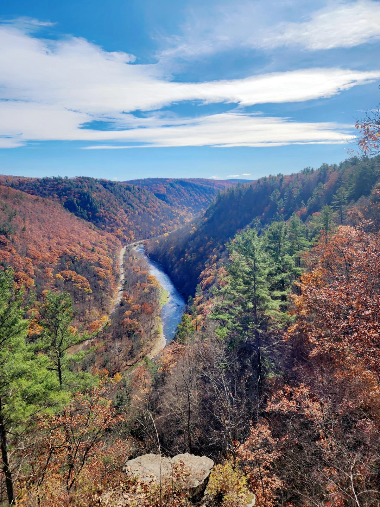
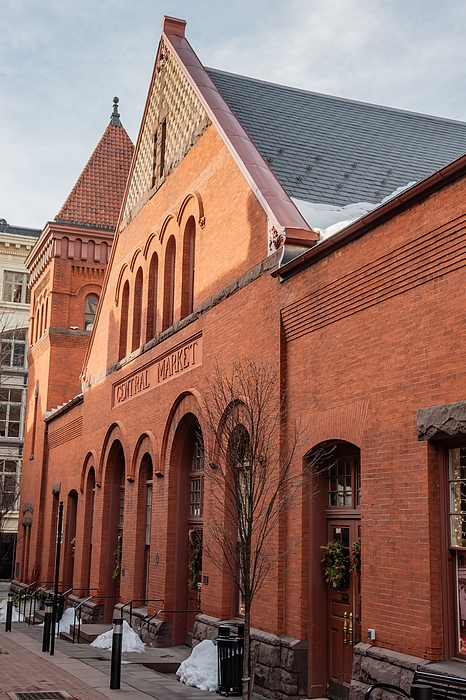
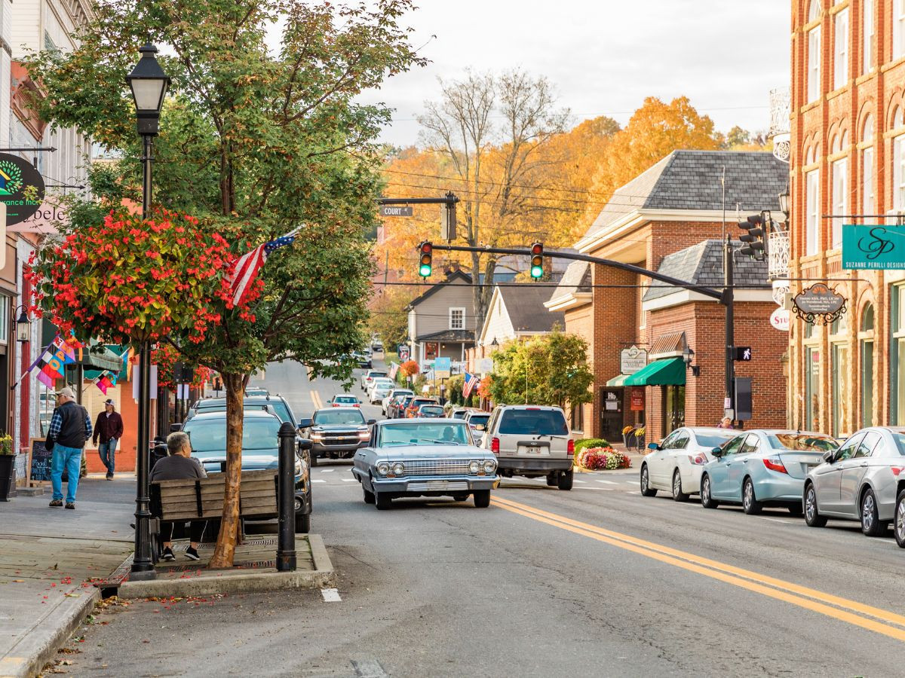

You've Got a Friend In
State Park of the Month

Worlds End State Park
Situated in the Endless Mountains, this park is known for its rugged beauty, with hiking trails, waterfalls, and breathtaking views of the Loyalsock Creek Gorge.
Get Lost...In Pennsylvania!

Gettysburg National Military Park
Gettysburg National Military Park is the perfect place for a Civil War history lover. It contains multiple monuments in remembrance of the Gettysburg battle.

Hersheypark
A renowned amusement park featuring exciting rides, live entertainment, and an opportunity to learn about chocolate-making at Hershey's Chocolate World.

Pine Grove Furnace State Park
Serving as the "Gateway to the Appalachian Trail," this park offers hiking, picnicking, and swimming opportunities, along with historic features and natural beauty.

The Pennsylvania Grand Canyon
Also known as Pine Creek Gorge, this natural wonder features stunning vistas, hiking trails, and opportunities for outdoor recreation.

Lancaster Central Market
The oldest continuously operating farmers' market in the U.S., offering a bustling atmosphere, local produce, crafts, and diverse food vendors.

Lewisburg
A charming small town known for its historic downtown, offering boutique shops, galleries, and restaurants, as well as attractions like the Lewisburg Farmers Market and Packwood House Museum.